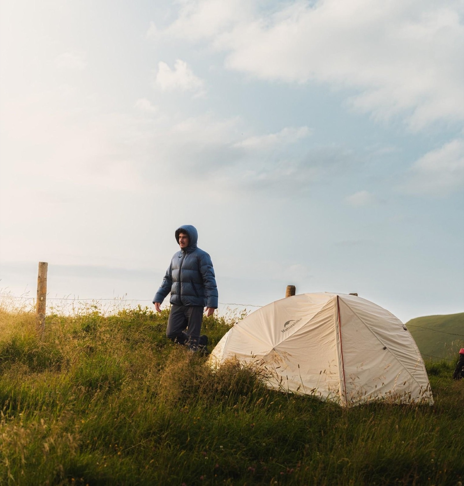
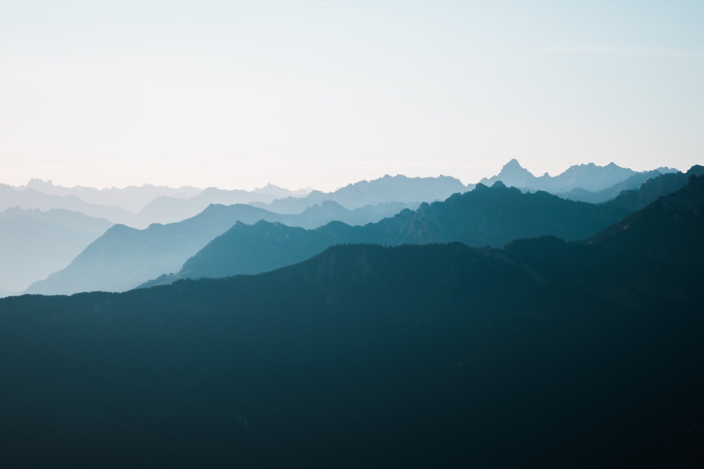
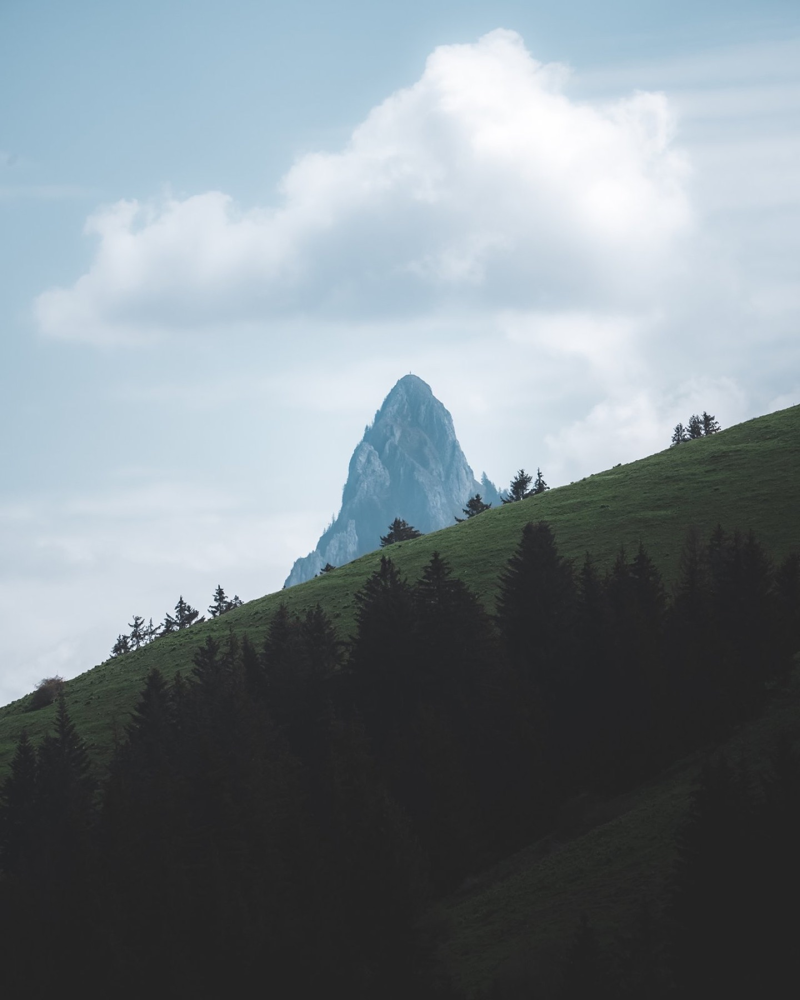
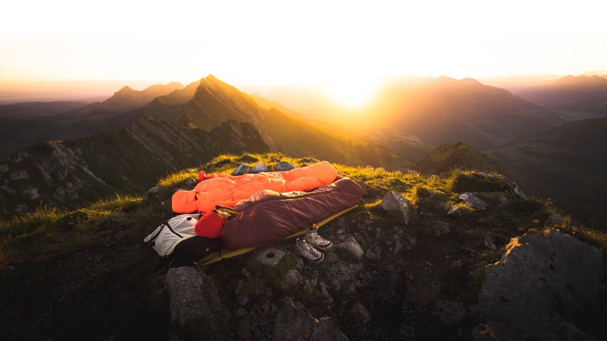
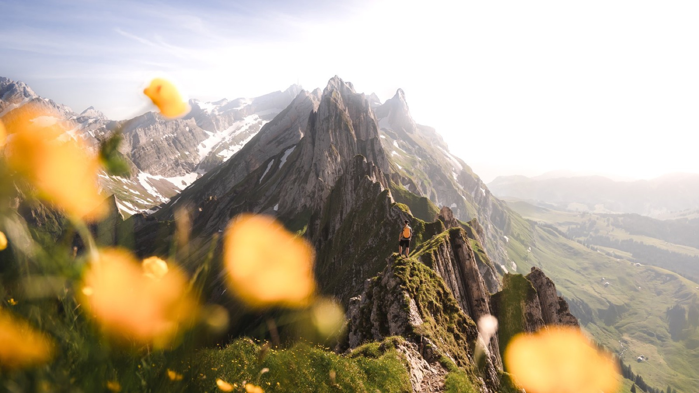
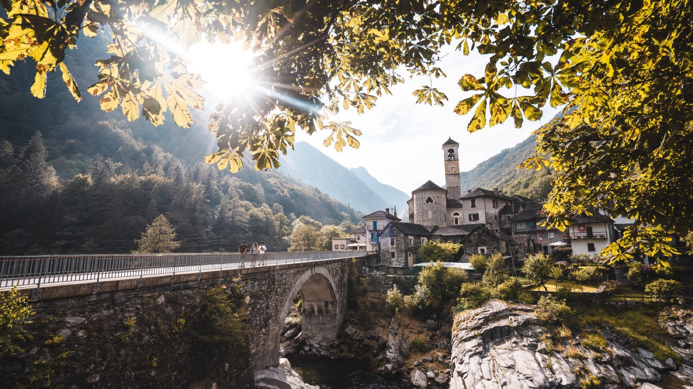
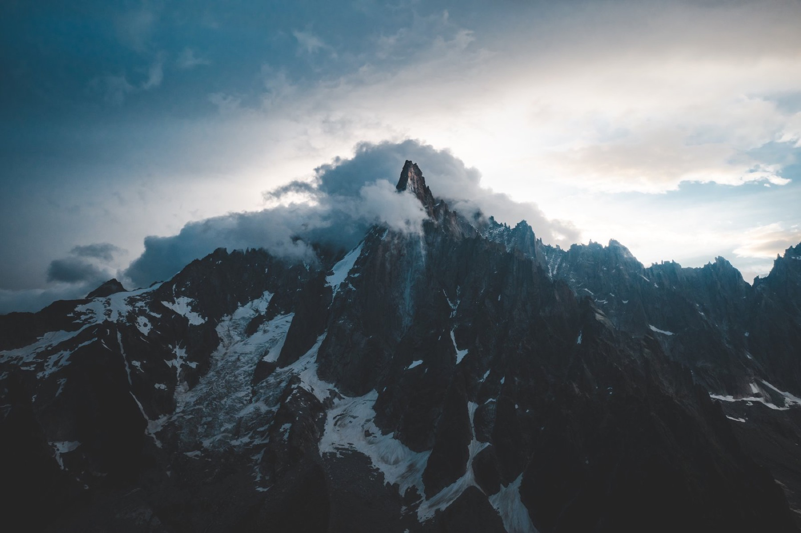

Swiss Hidden Gems · Field guide
Switzerland
beyond the tourist map.
A field guide to Switzerland's secret corners. This free preview opens the front matter and a handful of sample spots from three regions. Unlock all 122 spots, GPS pins and lifetime updates with the full guide.
Chapters
Front matter

Before you go
Chapter 01
Sample

Central Switzerland
Chapter 02
Full guide

Valais
Chapter 03
Full guide

Fribourg
Chapter 04
Full guide

Western Switzerland
Chapter 05
Sample

Eastern Switzerland
Chapter 06
Full guide

Ticino
Chapter 07
Teaser

Beyond the Border
What's in the full guide. Every spot in all seven regions, exact GPS coordinates for each, photo timing and wildcamping notes. 122 spots in total. One-time payment, lifetime updates.